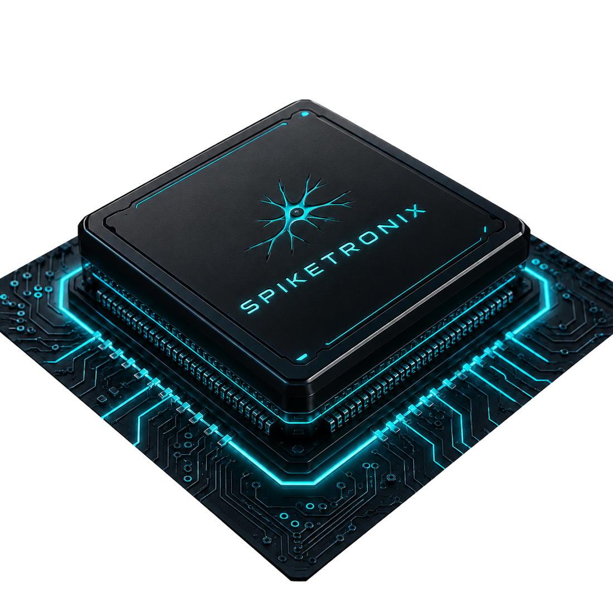
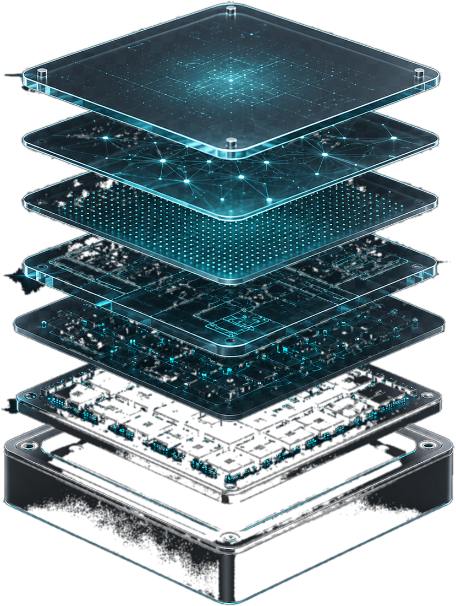

Years on a coin cell, or self-powered.
Rare events should not require a processor and volatile memory to remain active around the clock.
Spiketronix designs ultra-low-power neuromorphic AI chips, and the software to run them, built on non-volatile compute-in-memory.

Rare events should not require a processor and volatile memory to remain active around the clock.
Local inference removes network delay and reacts while the signal still matters.
Continuous local sensing keeps critical data private and surfaces early warning patterns.
Each pillar removes a different source of wasted energy. Together, they make always-on intelligence practical.
Spiking neurons stay silent until their input changes, then emit a brief spike — no event, no computation, no energy. Time and sequence are built in, so vibration, sound and biosignals are computed the way the brain does.
Once compute is sparse, the real cost is remembering the model through the long gaps between events. FeRAM holds every weight with the power fully off — so the gaps cost nothing, and the chip is instant-on.
A conventional chip shuttles weights to a separate compute unit every operation — and moving data wastes time and energy. Compute-in-memory does the maths where the weights already live, so nothing moves.
SYNAPSE is not an isolated accelerator block. Hardware and software are designed together so the system can be integrated and used.
The neuromorphic compute engine and memory system integrated as one chip platform.
Designed to connect with conventional embedded systems and host controllers.
Device variation is handled inside the platform rather than pushed onto the customer.
A deployable architecture rather than a custom research demonstrator.
Models are trained around the actual memory, quantization and compute behaviour.
Standardized configuration and control instead of custom laboratory scripts.
Moves a trained network into a configured, deployable hardware implementation.
The deployed model can be calibrated to the device and its operating environment.

Memory, mixed-signal hardware, digital architecture, neuromorphic computing and business development are brought together from day one.
CEO & System Architect
PhD in edge-AI hardware (TUM). Leads system architecture, with connections in Taiwan and the US.
CFO & Strategy
Decades in business development. Drives partnerships, funding and commercialization.
Professor & Scientific Advisor
Professor and group leader at Fraunhofer IPMS. Leads fabrication readiness and the technology roadmap.
We are happy to answer questions and provide more details about Spiketronix. Reach out for collaborations, partnerships or additional information.